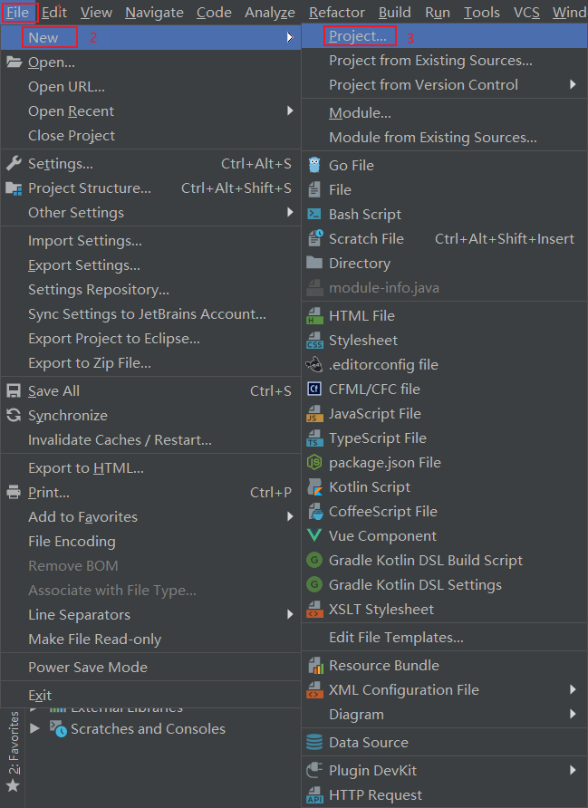
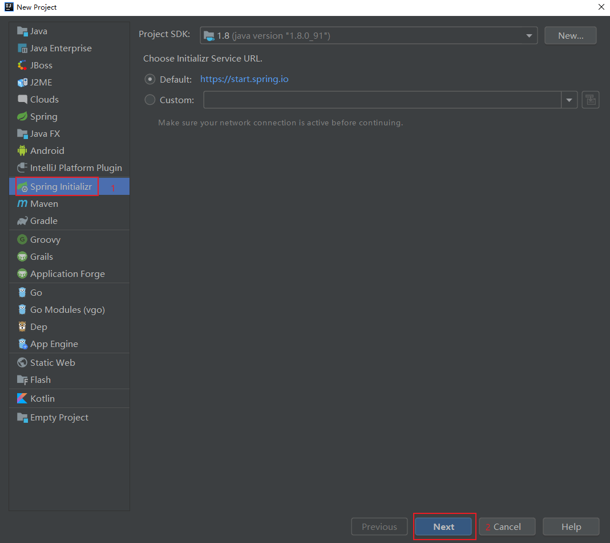
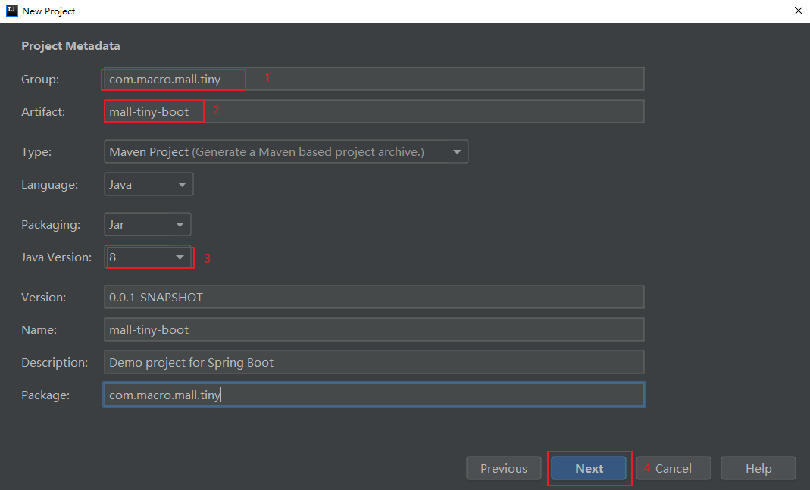
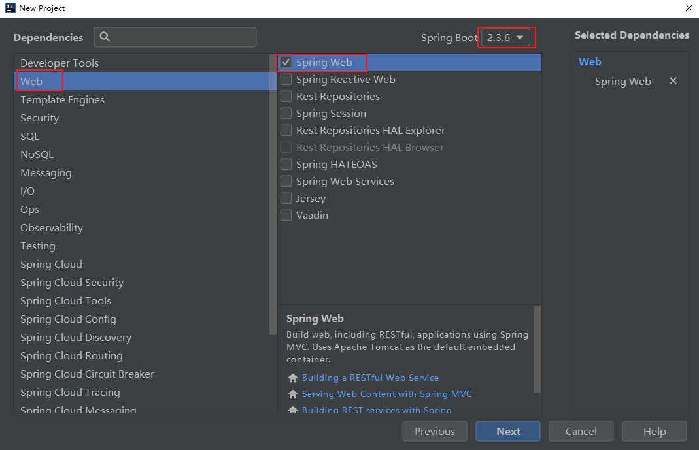
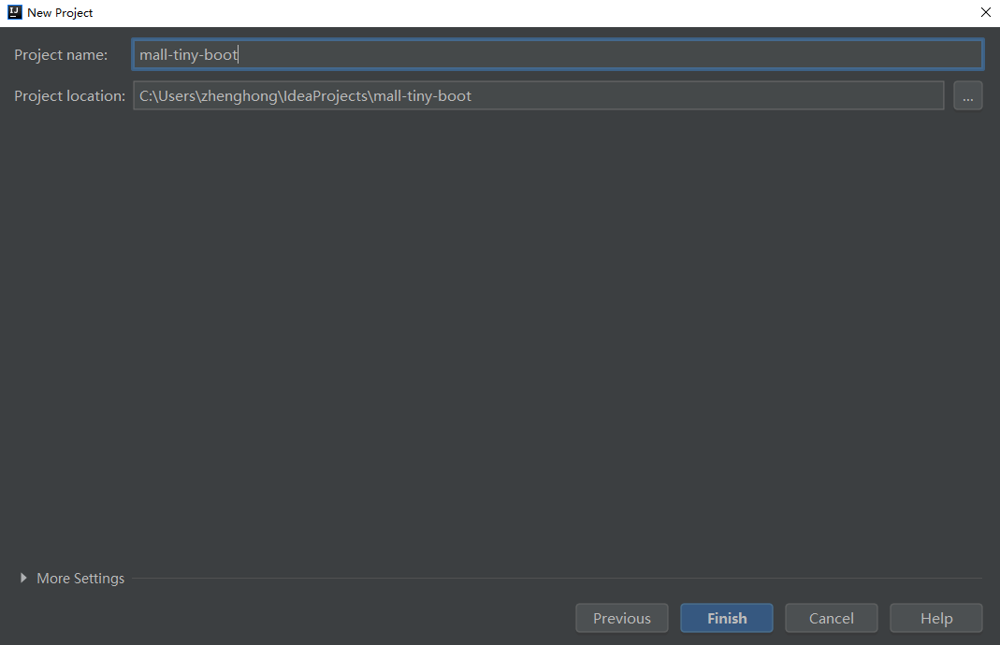
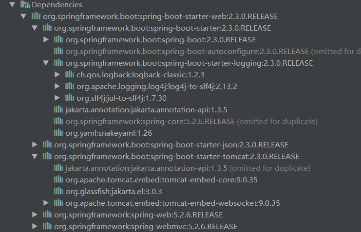

学习不走弯路，关注公众号 回复「学习路线」，获取mall项目专属学习路线！
肝了一周总结的SpringBoot实战教程，太实用了！
天天在用SpringBoot，但有些SpringBoot的实用知识点却不是很清楚！最近又对SpringBoot中的实用知识点做了个总结，相信对从Spring过渡到SpringBoot的朋友会很有帮助！
前言
首先我们来了解下为什么要有SpringBoot？
Spring作为J2EE的轻量级代替品，让我们无需开发重量级的Enterprise JavaBean（EJB），通过依赖注入和面向切面编程，使用简单的Java对象（POJO）即可实现EJB的功能。
虽然Spring的组件代码是轻量级的，但它的配置却是重量级的。即使后来Spring引入了基于注解的组件扫描和基于Java的配置，让它看上去简洁不少，但Spring还是需要不少配置。除此之外，项目的依赖管理也很麻烦，我们无法确保各个版本的依赖都能兼容。
为了简化Spring中的配置和统一各种依赖的版本，SpringBoot诞生了！
简介
SpringBoot从本质上来说就是Spring，它通过了一些自己的特性帮助我们简化了Spring应用程序的开发。主要有以下三个核心特性：
- 自动配置：对于很多Spring应用程序常见的应用功能，SpringBoot能自动提供相关配置，集成功能开发者仅需很少的配置。
- 起步依赖：告诉SpringBoot需要什么功能，它就能引入对应的库，无需考虑该功能依赖库的版本问题。
- Actuator：可以深入了解SpringBoot应用程序内部情况，比如创建了哪些Bean、自动配置的决策、应用程序的状态信息等。
开始使用
创建应用
创建SpringBoot应用的方式有很多种，这里使用最流行的开发工具IDEA来创建应用。
- 首先通过
File->New Project来创建一个项目；

- 然后选择通过
Spring Initializr来创建一个SpringBoot应用；

- 填写好Maven项目的
groupId和artifactId及选择好Java版本；

- 选择好起步依赖，这里选择的是开启Web功能的起步依赖；

- 选择好项目的存放位置即可顺利创建一个SpringBoot应用。

查看应用
项目结构
一个新创建的SpringBoot应用基本结构如下。
mall-tiny-boot
├─pom.xml # Maven构建文件
└─src
├─main
│ ├─java
│ │ └─MallTinyApplication.java # 应用程序启动类
│ └─resources
│ └─application.yml # SpringBoot配置文件
└─test
└─java
└─MallTinyApplicationTests.java # 基本的集成测试类
应用启动类
MallTinyApplication在SpringBoot应用中有配置和引导的作用，通过@SpringBootApplication注解开启组件扫描和自动配置，通过SpringApplication.run()引导应用程序启动；
//开启组件扫描和应用装配
@SpringBootApplication
public class MallTinyApplication {
public static void main(String[] args) {
//负责引导应用程序启动
SpringApplication.run(MallTinyApplication.class, args);
}
}
@SpringBootApplication注解是三个注解的结合体，拥有以下三个注解的功能：
@Configuration：用于声明Spring中的Java配置；@ComponentScan：启用组件扫描，当我们声明组件时，会自动发现并注册为Spring应用上下文中的Bean；@EnableAutoConfiguration：开启SpringBoot自动配置功能，简化配置编写。
测试应用
可以使用@RunWith和@SpringBootTest来创建Spring应用上下文，通过@Test注解来声明一个测试方法。
@RunWith(SpringRunner.class)
@SpringBootTest
@Slf4j
public class MallTinyApplicationTests {
@Autowired
private PmsBrandService pmsBrandService;
@Test
public void contextLoads() {
}
@Test
public void testMethod() {
List<PmsBrand> brandList = pmsBrandService.listAllBrand();
log.info("testMethod:{}", brandList);
}
}
编写应用配置
当我们需要微调自动配置的参数时，可以在application.yml文件中进行配置，比如微调下端口号。
server:
port: 8088
项目构建过程
SpringBoot项目可以使用Maven进行构建，首先我们需要继承spring-boot-starter-parent这个父依赖，父依赖可以控制所有SpringBoot官方起步依赖的版本，接下来当我们使用官方起步依赖时，就不用指定版本号了。我们还需要使用SpringBoot的插件，该插件主要用于将应用打包为可执行Jar。
<?xml version="1.0" encoding="UTF-8"?>
<project xmlns="http://maven.apache.org/POM/4.0.0" xmlns:xsi="http://www.w3.org/2001/XMLSchema-instance"
xsi:schemaLocation="http://maven.apache.org/POM/4.0.0 http://maven.apache.org/xsd/maven-4.0.0.xsd">
<modelVersion>4.0.0</modelVersion>
<groupId>com.macro.mall</groupId>
<artifactId>mall-tiny-boot</artifactId>
<version>1.0-SNAPSHOT</version>
<name>mall-tiny-boot</name>
<description>Demo project for Spring Boot</description>
<properties>
<project.build.sourceEncoding>UTF-8</project.build.sourceEncoding>
<project.reporting.outputEncoding>UTF-8</project.reporting.outputEncoding>
<java.version>1.8</java.version>
<skipTests>true</skipTests>
</properties>
<!--继承SpringBoot父项目，控制所有依赖版本-->
<parent>
<groupId>org.springframework.boot</groupId>
<artifactId>spring-boot-starter-parent</artifactId>
<version>2.3.0.RELEASE</version>
<relativePath/> <!-- lookup parent from repository -->
</parent>
<dependencies>
<!--SpringBoot起步依赖-->
<dependency>
<groupId>org.springframework.boot</groupId>
<artifactId>spring-boot-starter-web</artifactId>
</dependency>
<dependency>
<groupId>org.springframework.boot</groupId>
<artifactId>spring-boot-starter-actuator</artifactId>
</dependency>
<dependency>
<groupId>org.springframework.boot</groupId>
<artifactId>spring-boot-starter-test</artifactId>
<scope>test</scope>
</dependency>
</dependencies>
<build>
<plugins>
<plugin>
<!--SpringBoot插件，可以把应用打包为可执行Jar-->
<groupId>org.springframework.boot</groupId>
<artifactId>spring-boot-maven-plugin</artifactId>
</plugin>
</plugins>
</build>
</project>
使用起步依赖
使用起步依赖的好处
在使用起步依赖之前，我们先来了解下使用起步依赖的好处，当我们使用SpringBoot需要整合Web相关功能时，只需在pom.xml中添加一个起步依赖即可。
<dependency>
<groupId>org.springframework.boot</groupId>
<artifactId>spring-boot-starter-web</artifactId>
</dependency>
如果是Spring项目的话，我们需要添加很多依赖，还需要考虑各个依赖版本的兼容性问题，是个相当麻烦的事情。

指定基于功能的依赖
当我们需要开发一个Web应用，需要使用MySQL数据库进行存储，使用Swagger生成API文档，添加如下起步依赖即可。需要注意的是只有官方的起步依赖不需要指定版本号，其他的还是需要自行指定的。
<dependencies>
<!--SpringBoot Web功能起步依赖-->
<dependency>
<groupId>org.springframework.boot</groupId>
<artifactId>spring-boot-starter-web</artifactId>
</dependency>
<dependency>
<groupId>org.springframework.boot</groupId>
<artifactId>spring-boot-starter-test</artifactId>
<scope>test</scope>
</dependency>
<!--MyBatis分页插件-->
<dependency>
<groupId>com.github.pagehelper</groupId>
<artifactId>pagehelper-spring-boot-starter</artifactId>
<version>1.2.10</version>
</dependency>
<!--集成druid连接池-->
<dependency>
<groupId>com.alibaba</groupId>
<artifactId>druid-spring-boot-starter</artifactId>
<version>1.1.10</version>
</dependency>
<!--Mysql数据库驱动-->
<dependency>
<groupId>mysql</groupId>
<artifactId>mysql-connector-java</artifactId>
<version>8.0.15</version>
</dependency>
<!--springfox swagger官方Starter-->
<dependency>
<groupId>io.springfox</groupId>
<artifactId>springfox-boot-starter</artifactId>
<version>3.0.0</version>
</dependency>
</dependencies>
覆盖起步依赖中的库
其实起步依赖和你平时使用的依赖没什么区别，你可以使用Maven的方式来排除不想要的依赖。比如你不想使用tomcat容器，想使用undertow容器，可以在Web功能依赖中排除掉tomcat。
<dependencies>
<!--SpringBoot Web功能起步依赖-->
<dependency>
<groupId>org.springframework.boot</groupId>
<artifactId>spring-boot-starter-web</artifactId>
<exclusions>
<!--排除tomcat依赖-->
<exclusion>
<artifactId>spring-boot-starter-tomcat</artifactId>
<groupId>org.springframework.boot</groupId>
</exclusion>
</exclusions>
</dependency>
<!--undertow容器-->
<dependency>
<groupId>org.springframework.boot</groupId>
<artifactId>spring-boot-starter-undertow</artifactId>
</dependency>
</dependencies>
使用自动配置
SpringBoot的自动配置是一个运行时（更准确地说，是应用程序启动时）的过程，考虑了众多因素，才决定Spring配置应该用哪个，不该用哪个。
举个例子，当我们使用Spring整合MyBatis的时候，需要完成如下几个步骤：
- 根据数据库连接配置，配置一个dataSource对象；
- 根据dataSource对象和SqlMapConfig.xml文件（其中包含mapper.xml文件路径和mapper接口路径配置），配置一个sqlSessionFactory对象。
当我们使用SpringBoot整合MyBatis的时候，会自动创建dataSource和sqlSessionFactory对象，只需我们在application.yml和Java配置中添加一些自定义配置即可。
在application.yml中配置好数据库连接信息及mapper.xml文件路径。
spring:
datasource:
url: jdbc:mysql://localhost:3306/mall?useUnicode=true&characterEncoding=utf-8&serverTimezone=Asia/Shanghai
username: root
password: root
mybatis:
mapper-locations:
- classpath:mapper/*.xml
- classpath*:com/**/mapper/*.xml
使用Java配置，配置好mapper接口路径。
/**
* MyBatis配置类
* Created by macro on 2019/4/8.
*/
@Configuration
@MapperScan("com.macro.mall.tiny.mbg.mapper")
public class MyBatisConfig {
}
使用自动配置以后，我们整合其他功能的配置大大减少了，可以更加专注程序功能的开发了。
自定义配置
自定义Bean覆盖自动配置
虽然自动配置很好用，但有时候自动配置的Bean并不能满足你的需要，我们可以自己定义相同的Bean来覆盖自动配置中的Bean。
例如当我们使用Spring Security来保护应用安全时，由于自动配置并不能满足我们的需求，我们需要自定义基于WebSecurityConfigurerAdapter的配置。这里我们自定义了很多配置，比如将基于Session的认证改为使用JWT令牌、配置了一些路径的无授权访问，自定义了登录接口路径，禁用了csrf功能等。
/**
* SpringSecurity的配置
* Created by macro on 2018/4/26.
*/
@Configuration
@EnableWebSecurity
@EnableGlobalMethodSecurity(prePostEnabled = true)
public class SecurityConfig extends WebSecurityConfigurerAdapter {
@Autowired
private UmsAdminService adminService;
@Autowired
private RestfulAccessDeniedHandler restfulAccessDeniedHandler;
@Autowired
private RestAuthenticationEntryPoint restAuthenticationEntryPoint;
@Autowired
private IgnoreUrlsConfig ignoreUrlsConfig;
@Override
protected void configure(HttpSecurity httpSecurity) throws Exception {
List<String> urls = ignoreUrlsConfig.getUrls();
String[] urlArray = ArrayUtil.toArray(urls, String.class);
httpSecurity.csrf()// 由于使用的是JWT，我们这里不需要csrf
.disable()
.sessionManagement()// 基于token，所以不需要session
.sessionCreationPolicy(SessionCreationPolicy.STATELESS)
.and()
.authorizeRequests()
.antMatchers(HttpMethod.GET,urlArray) // 允许对于网站静态资源的无授权访问
.permitAll()
.antMatchers("/admin/login")// 对登录注册要允许匿名访问
.permitAll()
.antMatchers(HttpMethod.OPTIONS)//跨域请求会先进行一次options请求
.permitAll()
.anyRequest()// 除上面外的所有请求全部需要鉴权认证
.authenticated();
// 禁用缓存
httpSecurity.headers().cacheControl();
// 添加JWT filter
httpSecurity.addFilterBefore(jwtAuthenticationTokenFilter(), UsernamePasswordAuthenticationFilter.class);
//添加自定义未授权和未登录结果返回
httpSecurity.exceptionHandling()
.accessDeniedHandler(restfulAccessDeniedHandler)
.authenticationEntryPoint(restAuthenticationEntryPoint);
}
@Override
protected void configure(AuthenticationManagerBuilder auth) throws Exception {
auth.userDetailsService(userDetailsService())
.passwordEncoder(passwordEncoder());
}
@Bean
public PasswordEncoder passwordEncoder() {
return new BCryptPasswordEncoder();
}
@Bean
public UserDetailsService userDetailsService() {
//获取登录用户信息
return username -> {
AdminUserDetails admin = adminService.getAdminByUsername(username);
if (admin != null) {
return admin;
}
throw new UsernameNotFoundException("用户名或密码错误");
};
}
@Bean
public JwtAuthenticationTokenFilter jwtAuthenticationTokenFilter() {
return new JwtAuthenticationTokenFilter();
}
@Bean
@Override
public AuthenticationManager authenticationManagerBean() throws Exception {
return super.authenticationManagerBean();
}
}
自动配置微调
有时候我们只需要微调下自动配置就能满足需求，并不需要覆盖自动配置的Bean，此时我们可以在application.yml属性文件中进行配置。
比如微调下应用运行的端口。
server:
port: 8088
比如修改下数据库连接信息。
spring:
datasource:
url: jdbc:mysql://localhost:3306/mall?useUnicode=true&characterEncoding=utf-8&serverTimezone=Asia/Shanghai
username: root
password: root
读取配置文件的自定义属性
有时候我们会在属性文件中自定义一些属性，然后在程序中使用。此时可以将这些自定义属性映射到一个属性类里来使用。
比如说我们想给Spring Security配置一个白名单，访问这些路径无需授权，我们可以先在application.yml中添添加如下配置。
secure:
ignored:
urls:
- /
- /swagger-ui/
- /*.html
- /favicon.ico
- /**/*.html
- /**/*.css
- /**/*.js
- /swagger-resources/**
- /v2/api-docs/**
之后创建一个属性类，使用@ConfigurationProperties注解配置好这些属性的前缀，再定义一个urls属性与属性文件相对应即可。
/**
* 用于配置白名单资源路径
* Created by macro on 2018/11/5.
*/
@Getter
@Setter
@Component
@ConfigurationProperties(prefix = "secure.ignored")
public class IgnoreUrlsConfig {
private List<String> urls = new ArrayList<>();
}
Actuator
SpringBoot Actuator的关键特性是在应用程序里提供众多Web端点，通过它们了解应用程序运行时的内部状况。
端点概览
Actuator提供了大概20个端点，常用端点路径及描述如下：
| 路径 | 请求方式 | 描述 |
|---|---|---|
| /beans | GET | 描述应用程序上下文里全部的Bean，以及它们之间关系 |
| /conditions | GET | 描述自动配置报告，记录哪些自动配置生效了，哪些没生效 |
| /env | GET | 获取全部环境属性 |
| /env/{name} | GET | 根据名称获取特定的环境属性 |
| /mappings | GET | 描述全部的URI路径和控制器或过滤器的映射关系 |
| /configprops | GET | 描述配置属性（包含默认值）如何注入Bean |
| /metrics | GET | 获取应用程序度量指标，比如JVM和进程信息 |
| /metrics/{name} | GET | 获取指定名称的应用程序度量值 |
| loggers | GET | 查看应用程序中的日志级别 |
| /threaddump | GET | 获取线程活动的快照 |
| /health | GET | 报告应用程序的健康指标，这些值由HealthIndicator的实现类提供 |
| /shutdown | POST | 关闭应用程序 |
| /info | GET | 获取应用程序的定制信息，这些信息由info打头的属性提供 |
查看配置明细
- 直接访问根端点，可以获取到所有端点访问路径，根端点访问地址：http://localhost:8088/actuator
{
"_links": {
"self": {
"href": "http://localhost:8088/actuator",
"templated": false
},
"beans": {
"href": "http://localhost:8088/actuator/beans",
"templated": false
},
"caches-cache": {
"href": "http://localhost:8088/actuator/caches/{cache}",
"templated": true
},
"caches": {
"href": "http://localhost:8088/actuator/caches",
"templated": false
},
"health": {
"href": "http://localhost:8088/actuator/health",
"templated": false
},
"health-path": {
"href": "http://localhost:8088/actuator/health/{*path}",
"templated": true
},
"info": {
"href": "http://localhost:8088/actuator/info",
"templated": false
},
"conditions": {
"href": "http://localhost:8088/actuator/conditions",
"templated": false
},
"configprops": {
"href": "http://localhost:8088/actuator/configprops",
"templated": false
},
"env": {
"href": "http://localhost:8088/actuator/env",
"templated": false
},
"env-toMatch": {
"href": "http://localhost:8088/actuator/env/{toMatch}",
"templated": true
},
"loggers": {
"href": "http://localhost:8088/actuator/loggers",
"templated": false
},
"loggers-name": {
"href": "http://localhost:8088/actuator/loggers/{name}",
"templated": true
},
"heapdump": {
"href": "http://localhost:8088/actuator/heapdump",
"templated": false
},
"threaddump": {
"href": "http://localhost:8088/actuator/threaddump",
"templated": false
},
"metrics-requiredMetricName": {
"href": "http://localhost:8088/actuator/metrics/{requiredMetricName}",
"templated": true
},
"metrics": {
"href": "http://localhost:8088/actuator/metrics",
"templated": false
},
"scheduledtasks": {
"href": "http://localhost:8088/actuator/scheduledtasks",
"templated": false
},
"mappings": {
"href": "http://localhost:8088/actuator/mappings",
"templated": false
}
}
}
- 通过
/beans端点，可以获取到Spring应用上下文中的Bean的信息，比如Bean的类型和依赖属性等，访问地址：http://localhost:8088/actuator/beans
{
"contexts": {
"application": {
"beans": {
"sqlSessionFactory": {
"aliases": [],
"scope": "singleton",
"type": "org.apache.ibatis.session.defaults.DefaultSqlSessionFactory",
"resource": "class path resource [org/mybatis/spring/boot/autoconfigure/MybatisAutoConfiguration.class]",
"dependencies": [
"dataSource"
]
},
"jdbcTemplate": {
"aliases": [],
"scope": "singleton",
"type": "org.springframework.jdbc.core.JdbcTemplate",
"resource": "class path resource [org/springframework/boot/autoconfigure/jdbc/JdbcTemplateConfiguration.class]",
"dependencies": [
"dataSource",
"spring.jdbc-org.springframework.boot.autoconfigure.jdbc.JdbcProperties"
]
}
}
}
}
}
- 通过
/conditions端点，可以获取到当前应用的自动配置报告，positiveMatches表示生效的自动配置，negativeMatches表示没有生效的自动配置。
{
"contexts": {
"application": {
"positiveMatches": {
"DruidDataSourceAutoConfigure": [{
"condition": "OnClassCondition",
"message": "@ConditionalOnClass found required class 'com.alibaba.druid.pool.DruidDataSource'"
}]
},
"negativeMatches": {
"RabbitAutoConfiguration": {
"notMatched": [{
"condition": "OnClassCondition",
"message": "@ConditionalOnClass did not find required class 'com.rabbitmq.client.Channel'"
}],
"matched": []
}
}
}
}
}
- 通过
/env端点，可以获取全部配置属性，包括环境变量、JVM属性、命令行参数和application.yml中的属性。
{
"activeProfiles": [],
"propertySources": [{
"name": "systemProperties",
"properties": {
"java.runtime.name": {
"value": "Java(TM) SE Runtime Environment"
},
"java.vm.name": {
"value": "Java HotSpot(TM) 64-Bit Server VM"
},
"java.runtime.version": {
"value": "1.8.0_91-b14"
}
}
},
{
"name": "applicationConfig: [classpath:/application.yml]",
"properties": {
"server.port": {
"value": 8088,
"origin": "class path resource [application.yml]:2:9"
},
"spring.datasource.url": {
"value": "jdbc:mysql://localhost:3306/mall?useUnicode=true&characterEncoding=utf-8&serverTimezone=Asia/Shanghai",
"origin": "class path resource [application.yml]:6:10"
},
"spring.datasource.username": {
"value": "root",
"origin": "class path resource [application.yml]:7:15"
},
"spring.datasource.password": {
"value": "******",
"origin": "class path resource [application.yml]:8:15"
}
}
}
]
}
- 通过
/mappings端点，可以查看全部的URI路径和控制器或过滤器的映射关系，这里可以看到我们自己定义的PmsBrandController和JwtAuthenticationTokenFilter的映射关系。
{
"contexts": {
"application": {
"mappings": {
"dispatcherServlets": {
"dispatcherServlet": [{
"handler": "com.macro.mall.tiny.controller.PmsBrandController#createBrand(PmsBrand)",
"predicate": "{POST /brand/create}",
"details": {
"handlerMethod": {
"className": "com.macro.mall.tiny.controller.PmsBrandController",
"name": "createBrand",
"descriptor": "(Lcom/macro/mall/tiny/mbg/model/PmsBrand;)Lcom/macro/mall/tiny/common/api/CommonResult;"
},
"requestMappingConditions": {
"consumes": [],
"headers": [],
"methods": [
"POST"
],
"params": [],
"patterns": [
"/brand/create"
],
"produces": []
}
}
}]
}
},
"servletFilters": [{
"servletNameMappings": [],
"urlPatternMappings": [
"/*",
"/*",
"/*",
"/*",
"/*"
],
"name": "jwtAuthenticationTokenFilter",
"className": "com.macro.mall.tiny.component.JwtAuthenticationTokenFilter"
}]
}
}
}
查看运行时度量
- 通过
/metrics端点，可以获取应用程序度量指标，不过只能获取度量的名称；
{
"names": [
"http.server.requests",
"jvm.buffer.count",
"jvm.buffer.memory.used",
"jvm.buffer.total.capacity",
"jvm.classes.loaded",
"jvm.classes.unloaded",
"jvm.gc.live.data.size",
"jvm.gc.max.data.size",
"jvm.gc.memory.allocated",
"jvm.gc.memory.promoted",
"jvm.gc.pause",
"jvm.memory.committed",
"jvm.memory.max",
"jvm.memory.used",
"jvm.threads.daemon",
"jvm.threads.live",
"jvm.threads.peak",
"jvm.threads.states",
"logback.events",
"process.cpu.usage",
"process.start.time",
"process.uptime",
"system.cpu.count",
"system.cpu.usage"
]
}
- 需要添加指标名称才能获取对应的值，比如获取当前JVM使用的内存信息，访问地址：http://localhost:8088/actuator/metrics/jvm.memory.used
{
"name": "jvm.memory.used",
"description": "The amount of used memory",
"baseUnit": "bytes",
"measurements": [
{
"statistic": "VALUE",
"value": 3.45983088E8
}
],
"availableTags": [
{
"tag": "area",
"values": [
"heap",
"nonheap"
]
},
{
"tag": "id",
"values": [
"Compressed Class Space",
"PS Survivor Space",
"PS Old Gen",
"Metaspace",
"PS Eden Space",
"Code Cache"
]
}
]
}
- 通过
loggers端点，可以查看应用程序中的日志级别信息，可以看出我们把ROOT范围日志设置为了INFO，而com.macro.mall.tiny包范围的设置为了DEBUG。
{
"levels": [
"OFF",
"ERROR",
"WARN",
"INFO",
"DEBUG",
"TRACE"
],
"loggers": {
"ROOT": {
"configuredLevel": "INFO",
"effectiveLevel": "INFO"
},
"com.macro.mall.tiny": {
"configuredLevel": "DEBUG",
"effectiveLevel": "DEBUG"
}
}
}
- 通过
/health端点，可以查看应用的健康指标。
{
"status": "UP"
}
关闭应用
通过POST请求/shutdown端点可以直接关闭应用，但是需要将endpoints.shutdown.enabled属性设置为true才可以使用。
{
"message": "Shutting down, bye..."
}
定制Actuator
有的时候，我们需要自定义一下Actuator的端点才能满足我们的需求。
- 比如说Actuator有些端点默认是关闭的，我们想要开启所有端点，可以这样设置；
management:
endpoints:
web:
exposure:
include: '*'
- 比如说我们想自定义Actuator端点的基础路径，比如改为
/monitor，这样我们我们访问地址就变成了这个：http://localhost:8088/monitor
management:
endpoints:
web:
base-path: /monitor
常用起步依赖
起步依赖不仅能让构建应用的依赖配置更简单，还能根据提供给应用程序的功能将它们组织到一起，这里整理了一些常用的起步依赖。
官方依赖
<dependencies>
<!--SpringBoot整合Web功能依赖-->
<dependency>
<groupId>org.springframework.boot</groupId>
<artifactId>spring-boot-starter-web</artifactId>
</dependency>
<!--SpringBoot整合Actuator功能依赖-->
<dependency>
<groupId>org.springframework.boot</groupId>
<artifactId>spring-boot-starter-actuator</artifactId>
</dependency>
<!--SpringBoot整合AOP功能依赖-->
<dependency>
<groupId>org.springframework.boot</groupId>
<artifactId>spring-boot-starter-aop</artifactId>
</dependency>
<!--SpringBoot整合测试功能依赖-->
<dependency>
<groupId>org.springframework.boot</groupId>
<artifactId>spring-boot-starter-test</artifactId>
<scope>test</scope>
</dependency>
<!--SpringBoot整合注解处理功能依赖-->
<dependency>
<groupId>org.springframework.boot</groupId>
<artifactId>spring-boot-configuration-processor</artifactId>
<optional>true</optional>
</dependency>
<!--SpringBoot整合Spring Security安全功能依赖-->
<dependency>
<groupId>org.springframework.boot</groupId>
<artifactId>spring-boot-starter-security</artifactId>
</dependency>
<!--SpringBoot整合Redis数据存储功能依赖-->
<dependency>
<groupId>org.springframework.boot</groupId>
<artifactId>spring-boot-starter-data-redis</artifactId>
</dependency>
<!--SpringBoot整合Elasticsearch数据存储功能依赖-->
<dependency>
<groupId>org.springframework.boot</groupId>
<artifactId>spring-boot-starter-data-elasticsearch</artifactId>
</dependency>
<!--SpringBoot整合MongoDB数据存储功能依赖-->
<dependency>
<groupId>org.springframework.boot</groupId>
<artifactId>spring-boot-starter-data-mongodb</artifactId>
</dependency>
<!--SpringBoot整合AMQP消息队列功能依赖-->
<dependency>
<groupId>org.springframework.boot</groupId>
<artifactId>spring-boot-starter-amqp</artifactId>
</dependency>
<!--SpringBoot整合Quartz定时任务功能依赖-->
<dependency>
<groupId>org.springframework.boot</groupId>
<artifactId>spring-boot-starter-quartz</artifactId>
</dependency>
<!--SpringBoot整合JPA数据存储功能依赖-->
<dependency>
<groupId>org.springframework.boot</groupId>
<artifactId>spring-boot-starter-data-jpa</artifactId>
</dependency>
<!--SpringBoot整合邮件发送功能依赖-->
<dependency>
<groupId>org.springframework.boot</groupId>
<artifactId>spring-boot-starter-mail</artifactId>
</dependency>
</dependencies>
第三方依赖
<dependencies>
<!--SpringBoot整合MyBatis数据存储功能依赖-->
<dependency>
<groupId>org.mybatis.spring.boot</groupId>
<artifactId>mybatis-spring-boot-starter</artifactId>
<version>${mybatis-version.version}</version>
</dependency>
<!--SpringBoot整合PageHelper分页功能依赖-->
<dependency>
<groupId>com.github.pagehelper</groupId>
<artifactId>pagehelper-spring-boot-starter</artifactId>
<version>${pagehelper-starter.version}</version>
</dependency>
<!--SpringBoot整合Druid数据库连接池功能依赖-->
<dependency>
<groupId>com.alibaba</groupId>
<artifactId>druid-spring-boot-starter</artifactId>
<version>${druid.version}</version>
</dependency>
<!--SpringBoot整合Springfox的Swagger API文档功能依赖-->
<dependency>
<groupId>io.springfox</groupId>
<artifactId>springfox-boot-starter</artifactId>
<version>${springfox-version}</version>
</dependency>
<!--SpringBoot整合MyBatis-Plus数据存储功能依赖-->
<dependency>
<groupId>com.baomidou</groupId>
<artifactId>mybatis-plus-boot-starter</artifactId>
<version>${mybatis-plus-version}</version>
</dependency>
<!--SpringBoot整合Knife4j API文档功能依赖-->
<dependency>
<groupId>com.github.xiaoymin</groupId>
<artifactId>knife4j-spring-boot-starter</artifactId>
<version>${knife4j-version}</version>
</dependency>
</dependencies>
项目源码地址
https://github.com/macrozheng/mall-learning/tree/master/mall-tiny-boot
公众号